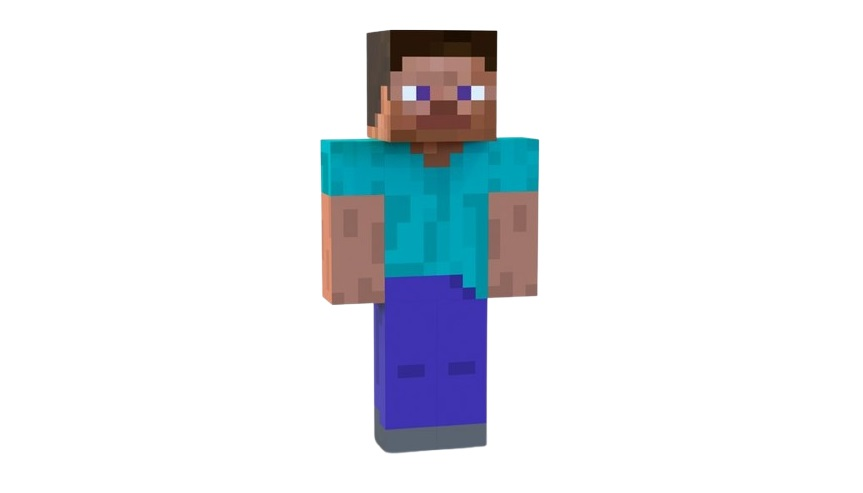

Postacie Minecrafta

Steve
Główny bohater gry, reprezentujący gracza. Steve jest zdolny do budowania, kopania i walki z mobami.
Alex
Alternatywna postać gracza, wprowadzona w późniejszych wersjach gry. Różni się od Steve'a wyglądem, ale ma te same umiejętności.

Creeper
Jeden z najbardziej rozpoznawalnych mobów w grze. Creepery podkradają się do gracza i wybuchają, niszcząc otoczenie.

Enderman
Tajemniczy mob potrafiący się teleportować. Atakuje gracza tylko wtedy, gdy ten spojrzy mu w oczy.

Smok Endu
Ostateczny boss gry, którego pokonanie jest głównym celem w trybie survival. Mieszka w wymiarze End.